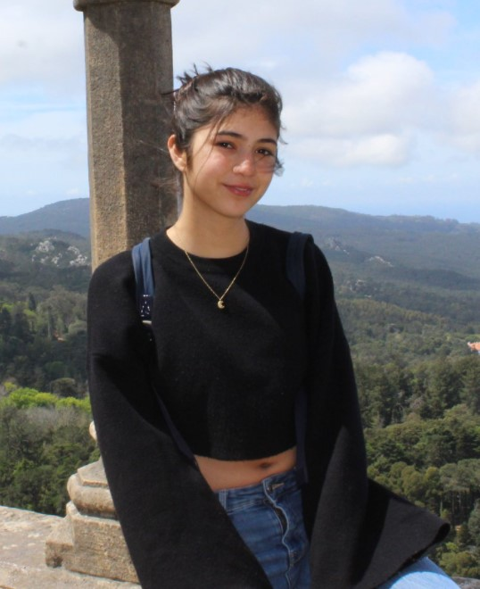

Aline Patrón
|

|
Español |
|
Inglés |
|
|
Neerlandés |
Educación
Programa de intercambio
Neerlandés | Agosto 2018-Julio 2019
neerlandés. Estuve en la preparatoria "Ten Doorn"
en Eeklo.
Universidad Panamericana
Estudiante de Ingeniería Bioelectrónica 2019-2024
semestre en una de las mejores universidades de
México.
Instituto Aguascalientes
Preparatoria Marista 2015-2018
como danza árabe y fútbol.
Experiencia Laboral
Intructora de danza aérea
DCA | Abril 2021 - Hoy
do telas a niños.
Acpla
Acpla | Verano 2021
Servicio social
hojas de papel.
Contacto:
+52 (449) 209 8228
0214161@up.edu.mx
Facebook